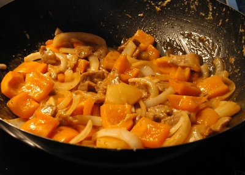

| Zutaten für 2 Personen: | |
| 120 g | Schweinefleisch |
| 1/4 TL | Salz |
| 1 TL | Sojasauce |
| 2.5 EL | Maisstärke |
| 1 TL | Wasser |
| 1 | Eigelb |
| 1 | Peperoni grün |
| 1 | Zwiebel |
| 60 g | Ananas, Pfirsiche, Aprikosen oder Litschis, ohne Saft |
| Würzsauce: | |
| 4 TL | Essig |
| 4 TL | Ketchup |
| 4 TL | Zucker |
| 1 TL | Maisstärke |
| 1 Prise | Salz |
| 1/4 TL | Sesamöl |
Marinade (Salz, Sojasauce, 1/2 EL Maisstärke, 1 TL Wasser, Eigelb) zubereiten.
Fleisch in 3 cm grosse Würfel schneiden, Fleisch 30 Minuten marinieren.
Peperoni entkernen und in 4 cm grosse Stücke schneiden. Zwiebel und Früchte in ebenso grosse Stücke schneiden.
Das marinierte Fleisch in 2 EL Maisstärke wälzen, bis alle Stücke rundum damit bedeckt sind.
Würzsauce zubereiten.
Fleisch 2 Minuten frittieren, dann herausheben und abtropfen lassen. Frittierfett erneut erhitzen und die Fleischwürfel nochmals frittieren, damit sie knusprig werden, dann abtropfen lassen.
In einer Bratpfanne 1 EL Öl erhitzen, grüne Peperoni, Zwiebel und Früchte 1 Minuten braten.
Würzsauce hinzufügen und ständig rühren, bis sie eindickt.
Pfanne vom Feuer nehmen, Fleischwürfel hineingeben und sofort servieren.
Tipp: Für dieses Gericht möglichst frische Früchte verwenden.
Herbert Eigenmann, Code: SWC
Ganz OK. Haut nicht von den Socken. Ich habe so meine Fragezeichen wegen den Mengen. Dem Rezept fehlt die Sorgfalt. Sweet and Sour Turkey war besser. RE, 30.7.2000
Am 8.5.2010 gelang mir dieses Gericht mit Kalbsgeschnetzeltem ganz gut. Es hat wunderbar geschmeckt. Bild von Sandra. RE
@LINKBACK_TAG@ @WAKELOCK@